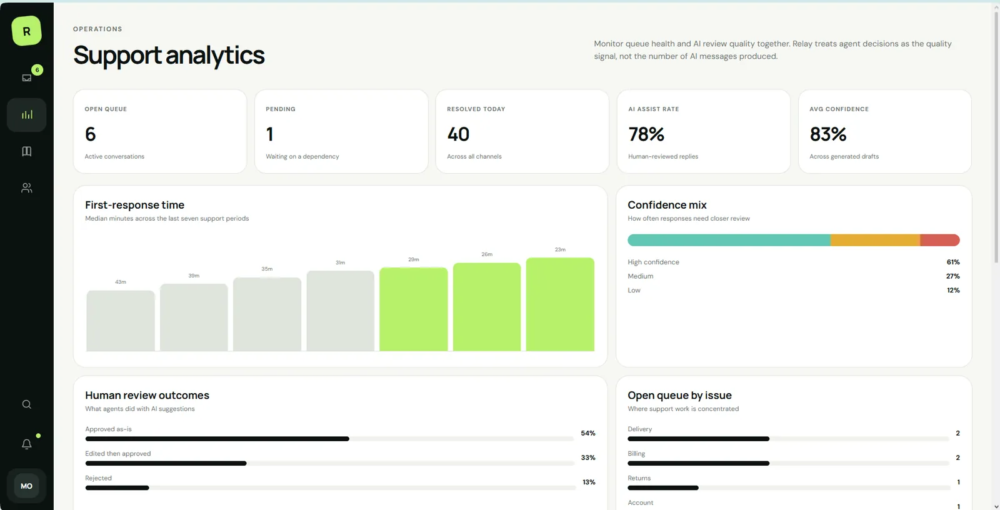
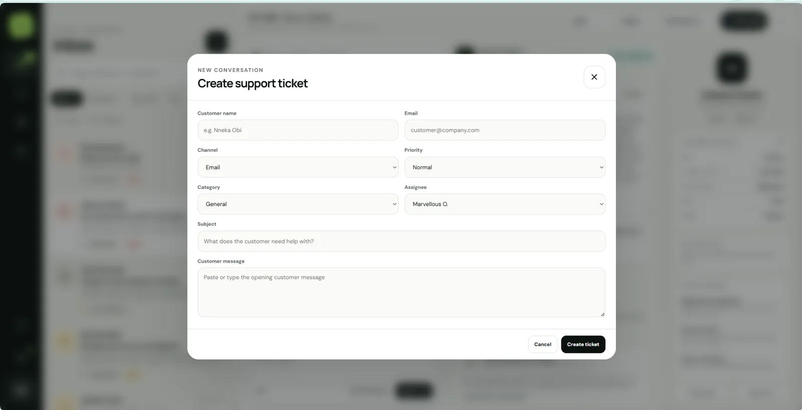
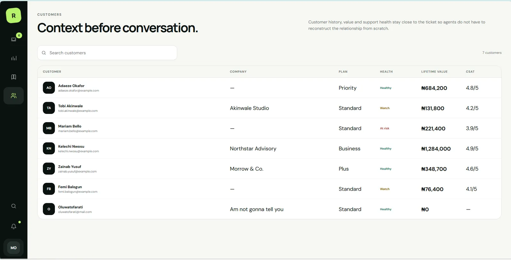
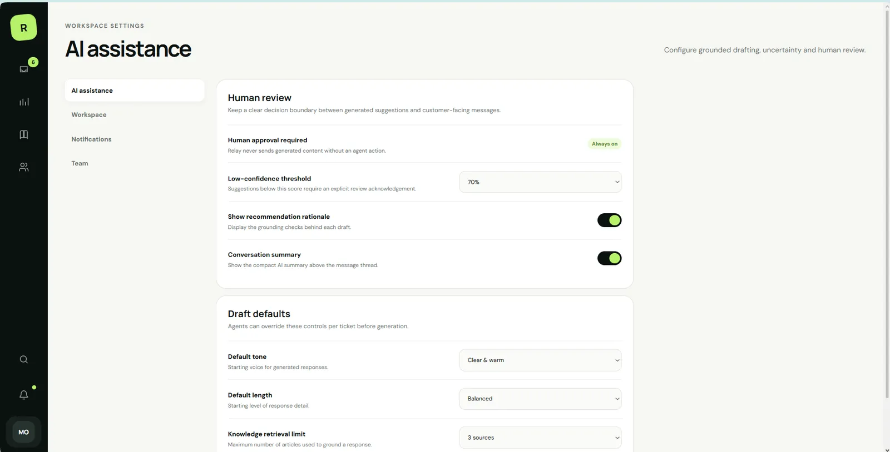

INBOX FIRST
Ticket operations remain the primary workspace; AI is support inside the workflow, not a replacement for it.


AI assistance is only useful when it stays grounded in the customer, the ticket and the workspace knowledge around it.
Relay keeps generation inspectable: retrieved sources, confidence, rationale and human approval remain part of the support workflow.
Relay keeps assistance attached to the actual support context. The recommendation is useful only because the customer, ticket history, retrieved sources and final human decision remain connected.
The support flow moves from ticket → customer history → grounded recommendation → human approval, keeping the person in control.



This section reads the supplied artifacts as product evidence: what the interface has to keep understandable, connected or constrained.
Ticket operations remain the primary workspace; AI is support inside the workflow, not a replacement for it.
Customer history and account context stay visible while a response is being prepared.
Suggested language is presented as a draft that can be checked, edited and approved before sending.
Knowledge and customer context are surfaced alongside the suggestion so the operator can inspect why it exists.
A compact contact sheet keeps the page readable; select any frame to inspect it at full size.